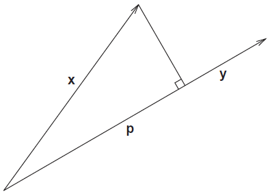

Notes on Linear Regression
December 05, 2016
Overview
For linear systems
$G$
is a matrix,
$$
G(m) = G_{m \times n} ~ m_{n \times 1} = d_{m \times 1}
$$
If
$\text{rank}(G) = n$
, then
$G$
has full column rank and will be assumed in general for linear regression. Usually
$G ~ m \neq d$
exactly because
$d$
will contain some noise. To overcome this instead of solving for
$m$
directly, we look for a minimization of a measure of the residual vector
$r$
$$
r = d - G~m
$$
A common measure to minimize
$r$
is the
$L_2$
norm, this is the
least squares solution
. It is statistically most likely if errors are normally distributed. To derive the
$L_2$
solution
$m_{L_2}$
, we need the projection vector
$\text{proj}_y (x)$
.
$$
||x-y||_2^2 = ||x||_2^2 + ||y||_2^2 - 2 ||x||_2 ||y||_2 \cos{\theta} \\
(x-y)^T (x-y) = x^T x + y^T y - 2 ||x||_2 ||y||_2 \cos{\theta} \\
x^T x - 2x^T y + y^T y = x^T x + y^T y - 2 ||x||_2 ||y||_2 \cos{\theta} \\
-2x^T y = -2 ||x||_2 ||y||_2 \cos{\theta} \\
x^T y = ||x||_2 ||y||_2 \cos{\theta}
$$
This is used to get the
projection
$p$
of
$x$
onto
$y$
as shown below.

$$
\cos{\theta} = \frac{||p||_2}{||x||_2} \\
x^T y = ||x||_2 ||y||_2 \frac{||p||_2}{||x||_2} \\
||p||_2 = \frac{x^T y}{y^T y}
$$
Since
$p$
is in the direction of
$y$
, we can then define the projection vector
$\text{prop}_y (x)$
as
$$
\text{proj}_y (x) = ||p||_2 y = \frac{x^T y}{y^T y} y
$$
Now we want to find the best
$m_\text{ls}$
which minimizes
$||d - G ~ m_\text{ls} ||_2^2$
where
$m_\text{ls}$
is the least squares solution. The closest we can get to
$d$
will be the projection of
$d$
onto the range of
$G$
,
$R(G)$
, and will be our least squares solution.
$$
G ~ m_\text{ls} = \text{proj}_{R(G)} (d)
$$
Since the component of
$d$
not in
$R(G)$
,
$G ~ m_\text{ls} - d$
is perp to
$R(G)$
, each column of
$G$
is orthogonal to it
$$
G^T (G ~ m_\text{ls} - d) = 0 \\
G^T G ~ m_\text{ls} - G^T d = 0 \\
(G^T G) m_\text{ls} = G^T d
$$
If the columns of
$G$
are linearly independent
$m_\text{ls}$
has one unique solution and minimizes
$||G ~ m - d||_2^2$
$$
m_\text{ls} = (G^T G)^{-1} G^T d
$$